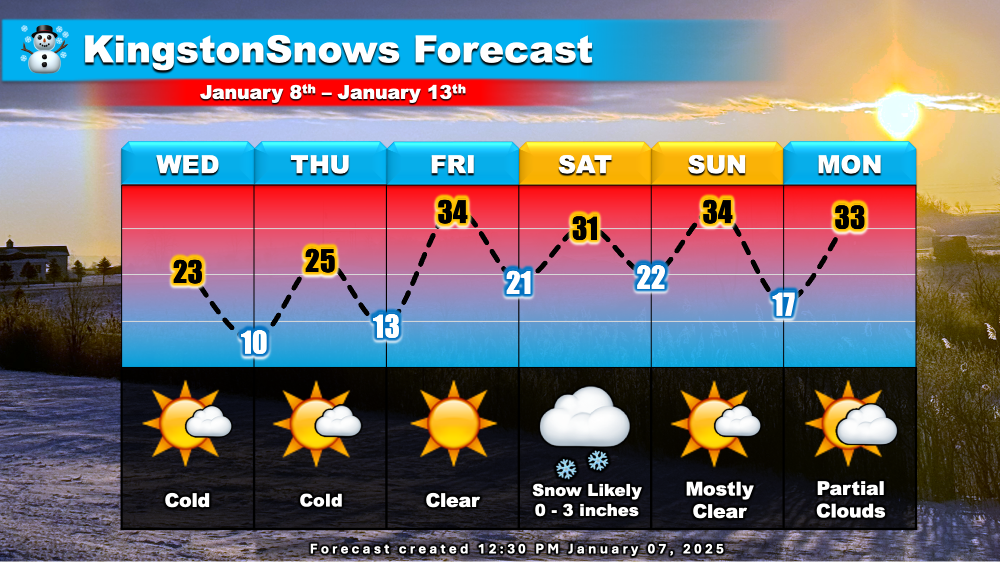

Warning: this is an old update that has been archived. This update is not current.
Cold this Week
School Forecast
through Friday January 10th
Last updated: 1:30PM Tuesday January 7th, 2025
| 0% (Nope) |
|---|
| 0% (Nope) |
|---|
| 0% (Nope) |
|---|
___________________
1:30PM Tuesday:
Happy Tuesday! A calm, but chilly week is upon us. There is also the potential for some light snow on Saturday.

The Forecast:
It will be cold the next few days. Expect temperatures to dip as low as 10°F overnight. It will feel like it is in the single digits during the early morning hours as school busses make their rounds. During the afternoons, temperatures will generally rise to the 20s, but with the wind it may feel like it's in the teens. Temperatures will be less frigid beginning Friday. On Saturday, light snow is likely across the region. The storm that will bring the snow is still four days away, so we'll have to monitor it - that said a dusting to about 3 inches is likely in the Kingston area.
The Impacts:
Overall impacts from Saturday's storm should be relatively minor. The least-impactful scenario would produce a light dusting of snow on the grass with roads remaining clear and dry. The reasonable most-impactful scenario would be snow covered roads and walkways like we saw several times last month. School impacts are not expected this week.
Next Update:
Probably Thursday
-Ethan 🙂
KingstonSnows | Kingston, New York
Website built by Ethan Burwell